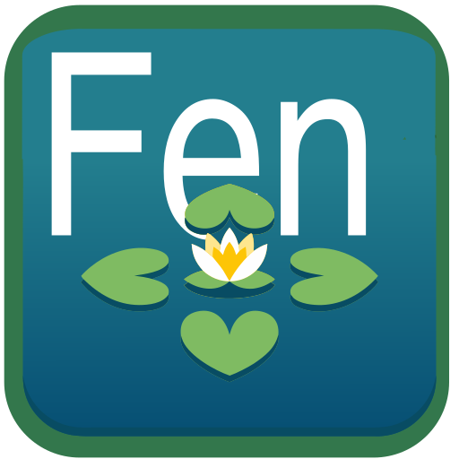
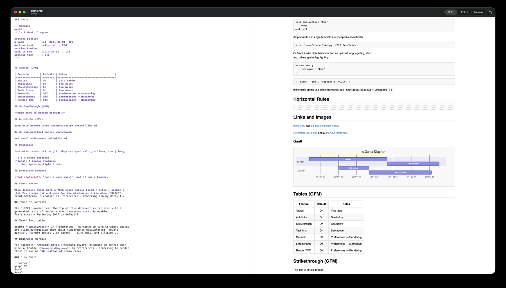
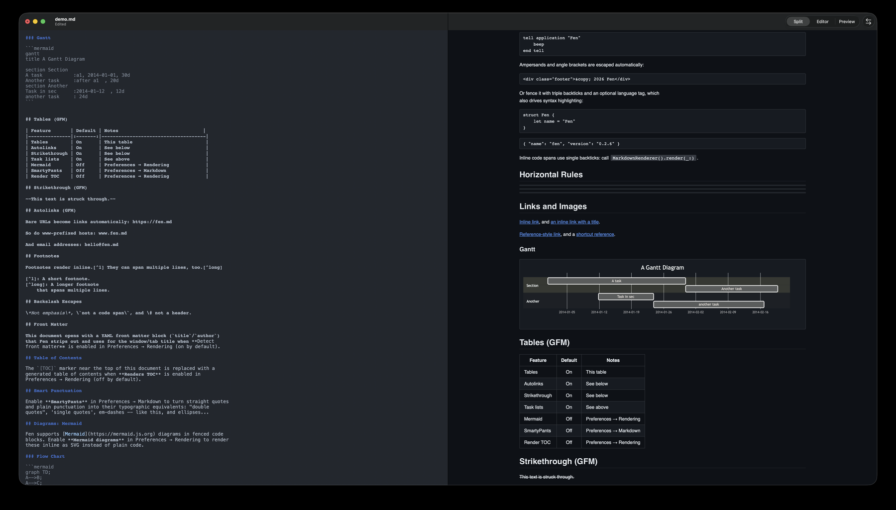

FenFen is a fast, minimal Swift/SwiftUI Markdown editor for macOS and iOS — live preview, GitHub-Flavored Markdown, Mermaid diagrams, MathJax — with a roadmap toward multi-file workspaces, backlinks, and local search. Free. Open source. Apple Silicon native.
Signed & notarized by Apple — opens without Gatekeeper warnings. macOS 15+ required.


A fen is a wetland that feeds itself — nutrient-rich, self-sustaining, always growing. That's the idea: your notes shouldn't just sit in files, they should grow into something more connected and useful over time.
Cross-platform core shared between macOS and iOS via FenCore. No Objective-C, no CocoaPods, no Intel-era baggage.
Built on Apple's swift-cmark — tables, task lists, strikethrough, autolinks, and footnotes, rendered accurately.
Syntax highlighting, MathJax, and Mermaid diagrams render as you type, with the preview tracking your cursor.
Built with Swift Package Manager for the current generation of Macs — fast launch, low memory, no Rosetta.
MIT-licensed, with the original MacDown and Mou copyrights preserved. No account, no telemetry, no paywall.
Multi-file workspaces, backlinks, local search, and a lightweight ontology layer are next on the roadmap.
A snapshot of the full roadmap — export, a formatting toolbar, and default-editor integration are next; the knowledge suite is the long game.
.md editor integration[[wiki-links]], and search a workspace with an on-device index.Fen is a small, focused project and issues, bug reports, and pull requests are all welcome.